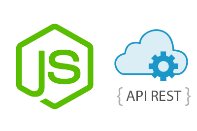

Seminario de Sistemas
API REST
Creado por Ing. Ditmar Castro Angulo
Contenido
- 1.- Que es?
- 2. Uso Correcto de URIS
- 3. HTTP, Metodos, Códigos de estado, Aceptación de tipos de contenido
- 4. Hypermedia
- 5. Creación de un primer servicio
- 6. Conclusión, recomendaciones
Que es un API REST
REST, REpresentational State Transfer, es un tipo de arquitectura de desarrollo web que se apoya totalmente en el estándar HTTP.
REST nos permite crear servicios y aplicaciones que pueden ser usadas por cualquier dispositivo o cliente que entienda HTTP, por lo que es increíblemente más simple y convencional que otras alternativas que se han usado en los últimos diez años como SOAP y XML-RPC.

REST se definió en el 2000 por Roy Fielding, coautor principal también de la especificación HTTP. Podríamos considerar REST como un framework para construir aplicaciones web respetando HTTP.
WorkNiveles de calidad para rest
Existen tres niveles de calidad a la hora de aplicar REST en el desarrollo de una aplicación web y más concretamente una API que se recogen en un modelo llamado Richardson Maturity Model en honor al tipo que lo estableció, Leonard Richardson padre de la arquitectura orientada a recursos. Estos niveles son:
Niveles de calidad para rest
- Uso correcto de URIs
- Uso correcto de HTTP.
- Implementar Hypermedia.
Otra cosa mas
Además de estas tres reglas, nunca se debe guardar estado en el servidor, toda la información que se requiere para mostrar la información que se solicita debe estar en la consulta por parte del cliente.
2. Uso Correcto de URIS
Cuando desarrollamos una web o una aplicación web, las URLs nos permiten acceder a cada uno de las páginas, secciones o documentos del sitio web.
Cada página, información en una sección, archivo, cuando hablamos de REST, los nombramos como recursos.
Estructura de una URL
{protocolo}://{dominio o hostname}[:puerto (opcional)]/{ruta del recurso}?{consulta de filtrado} Ejemplo
Por ejemplo, http://reureka.com/2013/conceptos-sobre-apis-rest/ .
Consideraciones
- Los nombres de URI no deben implicar una acción, por lo tanto debe evitarse usar verbos en ellos.
- Deben ser únicas, no debemos tener más de una URI para identificar un mismo recurso.
- Deben ser independiente de formato.
- Deben mantener una jerarquía lógica.
- Los filtrados de información de un recurso no se hacen en la URI. "Identificador de recursos Uniforme"
Ejemplo
/facturas/orden/desc/fecha-desde/2007/pagina/2 /facturas?fecha-desde=2007&orden=DESC&pagina=2Ejemplo
Incorrecto/facturas/orden/desc/fecha-desde/2007/pagina/2 /facturas?fecha-desde=2007&orden=DESC&pagina=2HTTP
Es muy importante conocer el protocolo HTTP
Para dominar este protocolo a que conocer
- Métodos HTTP
- Códigos de estado
- Aceptación de tipos de contenido
Metodos
- GET: Para consultar y leer recursos
- POST: Para crear recursos
- PUT: Para editar recursos
- DELETE: Para eliminar recursos.
- PATCH: Para editar partes concretas de un recurso.
EJEMPLO
- GET /facturas Nos permite acceder al listado de facturas
- POST /facturas Nos permite crear una factura nueva
- GET /facturas/123 Nos permite acceder al detalle de una factura
- PUT /facturas/123 Nos permite editar la factura, sustituyendo la totalidad de la información anterior por la nueva.
- DELETE /facturas/123 Nos permite eliminar la factura
- PATCH /facturas/123 Nos permite modificar cierta información de la factura, como el número o la fecha de la misma.
Codigos de estado
Es importante conocer las respuestas del protocolo
Algo muy comun es generar nuestros propios codigos de estados, pero para que reinventar la rueda si tenemos un codigo de estado para cada tipo de situacion posible
Codigos de estadoEjemplo
Petición
========
PUT /facturas/123
Respuesta
=========
Status Code 200
Content:
{
success: false,
code: 734,
error: "datos insuficientes"
}
Error Comun
Petición
========
PUT /facturas/123
Respuesta
=========
Status Code 400
Content:
{
message: "se debe especificar un id de cliente para la factura"
}
Correcto
Tipos y Formatos
Cuando hablamos sobre URLs, vimos también que no era correcto indicar el tipo de formato de un recurso al cual queremos acceder o manipular.
HTTP nos permite especificar en qué formato queremos recibir el recurso, pudiendo indicar varios en orden de preferencia, para ello utilizamos el header Accept.
Ejemplo
Petición
========
GET /facturas/123
Accept: application/epub+zip , application/pdf, application/json
Respuesta
=========
Status Code 200
Content-Type: application/pdf
En la respuesta, se devolverá el header Content-Type, para que el cliente sepa qué formato se devuelve
Hypermedia
Con Hypermedia básicamente añadimos información extra al recurso sobre su conexión a otros recursos relacionados con él.
Ejemplo
666
Procesado
http://example.com/api/pedido/666/factura
Creacion de un primer servicio CRUD
Sobre el servicio que tenemos montado con express instalamos los sigientes paquetes
- npm install mongoose
- npm install decrypt
Conexión
const mongoose = require("mongoose");
mongoose.connect("mongodb://localhost:27017/salud");
Estructura
var userModel = {
name: String,
password: String,
registerDate: Date,
avatar: String
}
const user = mongoose.model("user", userModel);
Comandos
Muestra todas las imagenes descargadas por docker
docker imagesBorra cualquier imagen que requieras
docker rmi IMAGEN-IDFIN
Export to PDF
Presentations can be exported to PDF, here's an example: